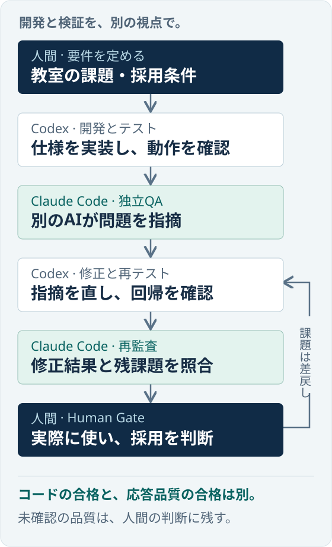

自動テストがPASSしても、授業には不合格だった
岩手県北上市のこむぎパソコン教室では、講師がAIで開発した教室運営・学習支援アプリ「KOMUGI Classroom DX」を実機で繰り返し試し、学習の順序、画面の使い勝手、AIの回答に問題を見つけました。自動テストがPASSした後にも、明確な文章作成の指示にAIが確認質問を返すなど、授業では受け入れられない応答が残っていました。講師は「Human Gate」で不合格と判断し、設計変更と修正、文章を生成するAIモデル（LLM）の比較検証を求めました。
本件の中心は、現場専門家による要件定義・Human Gate × Codexによる開発 × Claude Codeによる独立QAの三者連携です。Human Gateは、講師が実際に使って教育上の妥当性を判定し、問題があれば差し戻す工程です。QAは、仕様や実装に見落としがないかを確認する活動です。本レポートでは、この人間の判断を含む開発・検証の実践を「Dual-AI QA」として紹介します。
出発点は、講師1人に集中していた紙の進捗記録、教材ファイルの準備、授業後の片付けです。生徒が次に学ぶ内容を分かりやすくし、講師の負担を減らすために開発を始めました。確認できた成果は、現場の専門知識がテスト対象だけでは捉えきれない不備を発見し、修正とモデル比較の意思決定につながったことです。業務時間の削減効果や教育効果の定量測定は未完了です。
通常モデルはMistralのままです。Gemmaは比較候補で、正式採用していません。Issue #8のコードQAは合格しましたが、修正後の実LLM応答品質は再検証待ちです。
出典：開発構想・仕様原典、Issue #1〜#8の直接確認と公開用の経緯資料。対象期間は2026年11月17〜22日の開発・QA記録です。
講師の不合格判断が、設計と検証を動かした
学習の流れとUIを、授業の視点で組み直す
講師の実機操作を起点とするIssue #1では、短いやり取りで終わるAI練習では追加・修正・確認を学びにくいとして、AI練習→タイピング→本編の順序と、最大10回の成功回答まで続けられる仕様へ変更しました。Issue #2では、講師・生徒を切り替えるたびのログイン負担を受け、画面の独立利用を支えるセッション分離と、授業中に再起動しない起動処理へ改修しました。画面URL自体は以前から別であり、この修正では同時に使えることが焦点でした。
Issue #3では、講師がAI練習に入れない状態を発見し、接続設定と承認題材の不足を切り分ける診断を追加しました。Issue #4では、毎回の必須選択や終了時の選択が会話を妨げるとして、自由入力型チャットと1ボタン終了へ変更しました。APIへの通信が成功するだけでは、授業での会話の使いやすさは合格にならないという判断です。
「120文字で提案」に、文章ではなく確認質問が返る
Issue #4の最終記録では全170ケースがPASSしています。その後、講師が同修正の実機版を操作してIssue #5を起票しました。依頼は「120文字で提案してください。」。それに対しAIは「文章の長さは120文字程度にしますか？」と確認し、求めた本文を出さない場面がありました。同じ依頼を繰り返しても前置きや確認が重なる問題を、講師は教育品質として不合格と判断しました。
初心者が明確に指示しても期待した文章が出なければ、自分の伝え方が悪かったと受け止めかねません。Issue #5に記されたこの教育上の懸念が、会話履歴の役割分離や再送処理の修正、実モデルによる品質評価につながりました。モデルだけを原因と決めつけた対応ではありません。
Mistralを測り、候補Gemmaも独立に評価する
修正後のMistral評価では、明確な文章依頼12回すべてで本文を返しました。一方、120字の目安を108〜132字として測ると適合は2/12で、同文反復、短縮・別案、仮案の扱いにも課題が残りました。最初の「質問だけで終わる」観察と、修正後の残課題は分けて読む必要があります。
講師の承認を得たGemmaの隔離比較では、初期の設定調整後に文字数適合5/6を観測しました。Issue #6では候補を検証できる構成を整え、追加20通信の試験では4/5、続くIssue #7の別枠20通信では5/5でした。試験群ごとの分母です。MistralとGemmaは生成設定・題材・履歴などが異なり、統計的な優位や正式採用の根拠にはしません。
Issue #7ではモデル名やCodexの所見を伏せて、Claude Codeが実応答を独立ブラインドQAしました。完成した別案の不足、本人が指定していない約束、待機負担のMedium 3件を検出し、Issue #8で指示とUIを修正しました。コードQAの合格と、実際に良い回答が返ることの確認は別です。 Issue #8後の追加実通信は0回で、実応答品質の再検証と授業採用の判断は残っています。
Issue #1〜#8の観察・判断・対応・出典を公開用の経緯資料に掲載しています。これらは既存の実施記録を今回直接照合したもので、新たな製品試験ではありません。
Codex・Claude Code・人間の役割
| 担当 | 実施したこと | 判断の範囲 |
|---|---|---|
| 講師（現場専門家） | 要件定義、実機での反復試用、UI・教育設計・AI回答の問題発見、不合格判定、比較試験の承認 | 授業で使えるかを判断し、設計と検証のやり直しを求める |
| Codex | 仕様整理、実装、指摘への修正、自動テスト、HTTP・Windows起動などの動作確認 | 実装と検証の証拠をそろえる |
| Claude Code | 候補コード・仕様・テストの静的監査、修正後の再監査、実AI応答のブラインド評価 | 別のAI・別の評価工程で所見を返す |
「独立」は、外部認証機関による監査という意味ではありません。記録されたコード監査では、Claude Codeの編集・実行ツールやMCP・hooksを無効にした読み取り専用の工程を用いています。ClaudeがCodexのテストをそのまま再実行したわけではありません。モデル名や実行条件も記録し、Issue #8では返却メタデータから claude-opus-5-5 を確認しています。
開発から人間による確認まで

- 人間が目的と仕様を定め、Codexが実装候補とテストを作る。
- Claude Codeが対象資料を独立に読み、問題と重大度を報告する。
- Codexが指摘を確かめ、修正と回帰テスト（既存機能が壊れていないかの確認）を行う。
- 修正した候補を再監査し、残った問題と確認範囲を記録する。
- 人間が実際の利用条件で確認する「Human Gate」で、授業への採否を判断する。問題があれば再び修正へ戻る。
この図は工程を整理したものです。実際のHuman Gateは最後の一度だけではなく、Issue #1〜#5のように修正版を試すたびに働き、要件そのものの見直しやモデル比較にも戻りました。
実AIの文章品質を評価したIssue #7では、架空の2題材を使用しました。実行結果を固定し、Codexの所見を先に保存したうえで、モデル名・過去の報告・Codexの評価・採用判断をClaudeに渡さず評価しました。入力・出力のハッシュによる同一性確認も記録されています。ただし評価対象はアプリ処理後の保存応答で、モデルの未加工の応答やトークン使用量は保存していません。
実際に見つかり、修正した問題
保存されていないのに、利用者が気づけない
初期の独立監査を受け、ログインの有効期限が切れた後の保存要求に「入力内容は保存されていません」と通知する処理を追加しました。日付が変わった際に、前日の未完了授業を当日の授業として扱う問題も修正しました。
修正前に固定受入テストの4ケースが失敗し、修正後は成功した記録があります。初期監査はHigh 0・Medium 5・Low 7、修正後の最終再監査はHigh 0・Medium 0・Low 2です。High／Medium／Lowは監査時点の重大度であり、全期間の不具合総数ではありません。関連コミット：e3e04fd。公開監査抜粋
日本語の途中入力が、余分に減点される
日本語タイピングで、途中終了時に未入力の後半まで誤りとして扱う問題を修正しました。全角・半角の区切り空白を同じように扱い、日本語変換を確定するEnterで送信される問題も防ぎました。
初回監査のMedium 2件は再監査で0件となり、全138ケース成功を記録しています。これは当時の静的監査と自動テストの結果です。Claude自身が実ブラウザを操作した確認ではありません。関連コミット：e0f6bce。公開監査抜粋
授業を止めず、保存失敗から戻れるようにする
教室側の試用を起点とするIssue #2では、講師と生徒のセッションを分離しました。独立QAでは、別タブの操作後の保存復旧や起動処理も確認し、保存失敗後5分以内に同じ生徒が再ログインした場合の未保存内容の復旧、正しいサーバーの再利用、授業後の明示更新へと修正しました。
初回Medium 3件は全体再監査・差分監査で0件となり、全152ケース成功を記録しています。実Chromeの別タブ操作感は当該記録では未確認です。関連コミット：bb4bcbc。公開監査抜粋
コードを直しても、AIの回答品質は別に測る
Issue #7のブラインド評価では、別案を求めても本文が出ない、本人が指定していない将来の約束を文章に含める、応答待ちの負担がある、というMedium 3件が残りました。後続のIssue #8で、完成文を求める指示、本人の事実と仮案の区別、失敗時の再送と待機中の終了操作を修正しました。
Issue #8の最終コードQAはHigh 0・Medium 0・Low 3、範囲外持ち越し3件。全200ケースは成功しています。一方で、修正後の実AI通信は0回です。実際の回答品質のMedium 3件が解消したとは確認していません。 Gemmaの正式採用・授業利用のHuman Gateは保留です。関連コミット：520b872 → 47d8208。公開監査抜粋
テスト・監査の集計と数え方
集計基準日：2026年11月22日（JST）。参照コミット：47d820885f6f5fd28a225fbf8829a231550d2044。既存累計レポートを出発点に、同じコミットのSTATUS・監査資料・履歴と、限定した監査結果メタデータを照合しました。製品テストや実AI通信を今回再実行した数ではありません。
| 指標 | 掲載値 | 単位・意味 |
|---|---|---|
| 主要自動テストの延べケース実行数 | 2,970件 | 記録された37行の主要実行結果の合計。同じケースの繰り返しを含む |
| 記録された主要テスト実行 | 37回分 | 集計表の記録単位。全コマンド実行回数を網羅するものではない |
| 最新のテストケース数 | 200件 | 最終の全体テスト数。固定受入5件を含み、205種類とは数えない |
| 独立QA起動 | 少なくとも43回 | 既存レポート40回に、今回確認した過去の3回を追加 |
| 独立QAの結果取得 | 少なくとも41回 | 所見を取得した回。合格回数という意味ではない |
| 独立QAの結果未取得 | 2回 | 利用上限1回・出力上限1回。合格に換算しない |
| Human Gate起点の修正対応 | 10対応 | 明示された5対応＋Issue #1〜#5。バグ数・受入合格数とは異なる |
| アプリから実Cloudflare LLMへの呼び出し | 少なくとも170回 | 重複を避けて確認できる試験群の下限。全期間の正確な総数ではない |
集計の補正： 既存レポートの独立QAは40回起動・38回結果取得・2回未取得です。今回、初期タイピングの監査2回と初期Medium修正の途中監査1回の計3回を追加確認しました。新しいQAを3回実行した意味ではありません。追加確認の根拠と全件台帳を公開しています。
自動テスト、監査起動、修正対応、実AI呼び出しは単位が異なるため合算しません。固定受入テストの別実行や途中の失敗・再実行、Windows・ブラウザの手動確認は2,970件に上乗せしていません。実Cloudflare通信にはCodexやClaudeの開発・監査用通信を含めず、全AIサービスを通じた総呼び出し数は未集計です。
実AI応答の品質評価は、小標本として読む
| Issue #7の指標 | 観測結果 | 注意点 |
|---|---|---|
| 実通信 | 20回、18成功・2タイムアウト | 再送2回は20回の内数で、両方成功 |
| 120文字の依頼 | 許容108〜132文字で5/5 | 厳密に120文字は0/5 |
| 短縮の依頼 | 2/2で短縮 | あらゆる文章での性能を示さない |
| Claudeの応答品質評価 | High 0・Medium 3・Low 6 | コードQAの件数と合算しない |
| 未実施の会話 | 家族題材の9・10往復目 | 通信予算到達で停止した |
Issue #5ではコード上の指摘を改善しても、実モデルの品質評価にHigh 2・Medium 2が残っています。条件や評価対象が異なる各回の数字をつなげ、モデル間の統計的優位や品質改善率を示すことはできません。
確認できた成果と、残る課題
講師が授業の視点で不合格を判断したことで、学習順序、会話回数、講師・生徒の独立利用、自由入力型チャットへと設計が変わり、回答品質の評価とモデル比較まで進みました。Codexによる修正とClaude Codeによる独立QAを組み合わせ、保存、認証、入力、起動、AI利用中の復旧も改善しました。Human Gate起点の10対応は、この差し戻しに応じた対応単位です。10個の不具合が完全に解消したという集計ではありません。
最新コードQAのLow 3件には、長い回答の末尾が自然に終わる保証がないこと、指示が重なる場合の解釈余地、専用固定テストの網羅不足があります。範囲外の持ち越し3件は、失敗を含む受講総試行上限、期限切れ時の未送信本文復元、モデル名の大文字扱いの不一致です。残課題の詳細
今後は、承認した条件での実応答再測定、講師同席での操作確認、実受講生の理解や文章の自然さの確認が必要です。Issue #7での題材外・個人情報・Office操作に関する攻撃的入力への耐性、負荷条件、長期間の障害率は未確認です。通常のMistral設定は維持しており、Gemmaの正式採用や製品本番公開を完了したという報告ではありません。
根拠を読める形で公開する
公開用の集計台帳、監査抜粋、補正理由、原資料のファイル名・行番号・参照コミットを根拠資料ページにまとめました。非公開の原ログや受講者情報は含めていません。公開資料は原記録の抜粋・要約であり、第三者が全試験を再実行できる完全なログ一式ではありません。
発信：こむぎパソコン教室（岩手県北上市）。公開・更新日：2026年11月22日。お問い合わせ：公式サイトに掲載の info@komugi-pc-school.tank.jp ／ 0197-62-6113。公式窓口は2026年11月22日に確認しました。